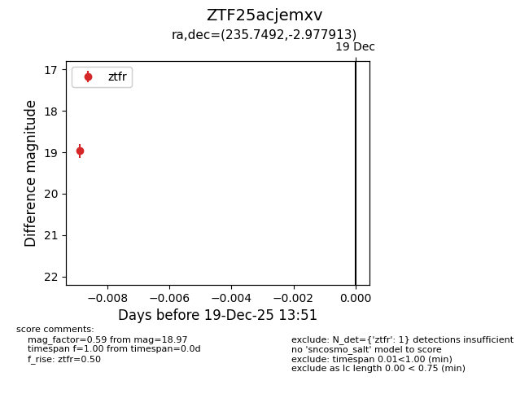
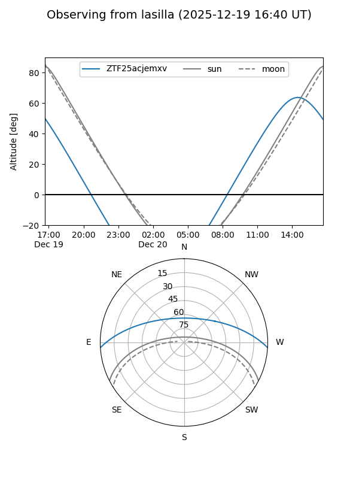
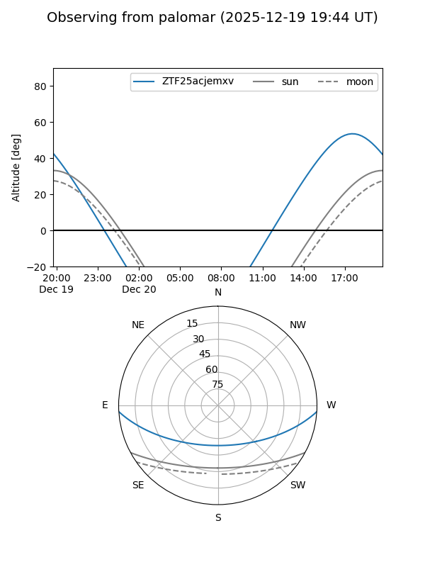

ZTF25acjemxv
Target ZTF25acjemxv at 2025-12-19 13:52
Aliases and brokers:
FINK: fink-portal.org/ZTF25acjemxv
Lasair: lasair-ztf.lsst.ac.uk/objects/ZTF25acjemxv
ALeRCE: alerce.online/object/ZTF25acjemxv
alt names
ZTF25acjemxv (ztf,fink_ztf)
Coordinates:
equatorial (ra, dec) = 235.7492,-2.97791
equatorial (HMS+DMS) = 15:42:59.80,-02:58:40.49
galactic (l, b) = (3.7311,+38.86548)
Flags:
Photometry:
last ztfr=18.97
1 ztfr detections
Lightcurve

Visibility


Additional plots